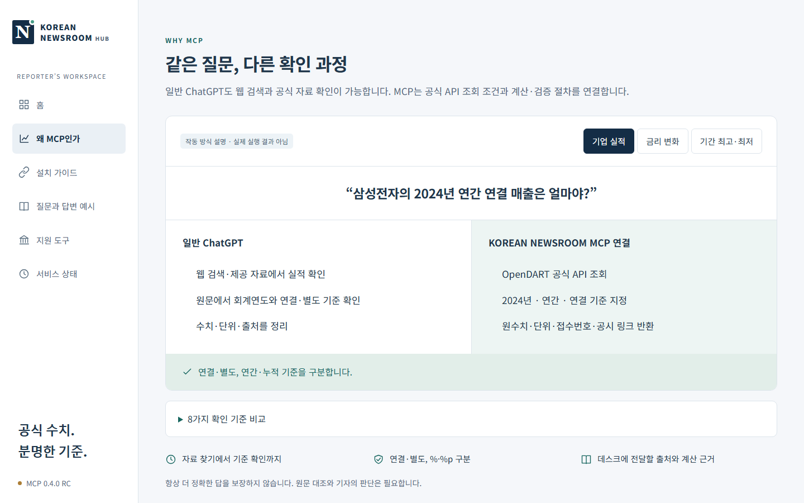
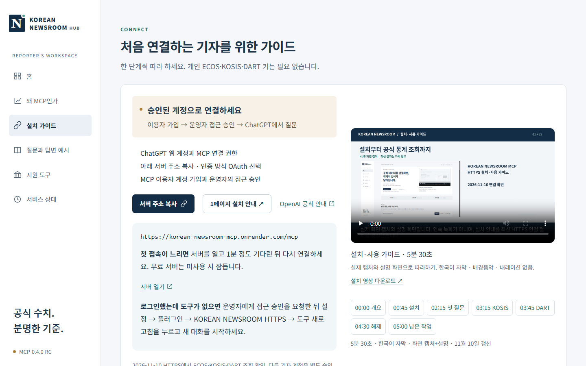
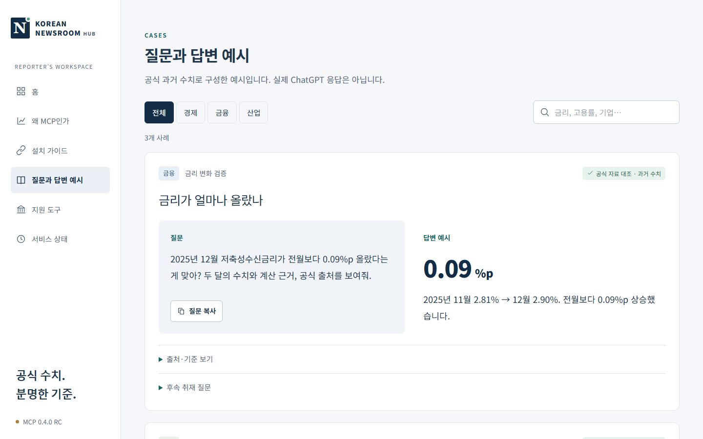
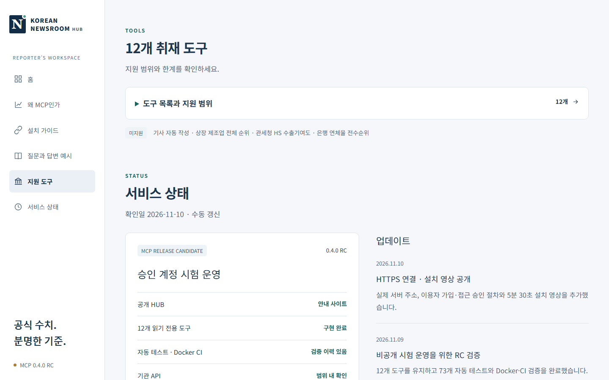

What this tool is
Ask ChatGPT for Samsung Electronics' revenue and a plausible number comes back. But what worries a reporter is not the number, it is the basis: consolidated or separate, annual or cumulative, % or %p, and the value as of which date. If even one of these is off, the number in the article is wrong.
KOREAN NEWSROOM hands this checking process to a tool. Using MCP (Model Context Protocol), it attaches official API query tools to ChatGPT, so when a reporter asks a question it calls ECOS, KOSIS and OpenDART directly and returns the raw figure together with the unit, reference period, data identifier and a link to the official source. The reporter gets the source and calculation basis to hand to the desk in one go.
The tool is read-only and does not write articles for you. It only finds, compares and verifies official data. The HUB also states clearly that checking against the original source and the final judgment are the reporter's job.
KOREAN NEWSROOM HUB is a guide site independent of the official services of institutions such as the Bank of Korea, Statistics Korea and the Financial Supervisory Service. The tool is in a trial operation stage used only by approved accounts.
What you can see on the HUB
It shows side by side how plain ChatGPT and MCP each work through the same question (Samsung Electronics' annual consolidated revenue for 2024). It explains that plain ChatGPT can also search the web and check sources, and that MCP differs by connecting official API query conditions with calculation and verification steps. This explains how it works; it is not an actual run result.
You follow 11 steps one screen at a time: from signing in to ChatGPT, adding a custom MCP server and OAuth authentication, to refreshing the tools after access approval, then a first question and follow-up questions. No personal ECOS, KOSIS or DART keys are needed. A 5 min 30 s install video and a one-page install guide are also available.
It separates what to check yourself from what to ask the operator when the add-MCP menu is missing, the server address won't connect, the tools don't appear after login, a usage limit kicks in, or a number differs from the official site. It also warns against sending tokens or private reporting materials.
You can copy example questions such as the change in savings deposit rates, an employment rate comparison between Jung-gu in Seoul and Jung-gu in Busan, and Samsung Electronics' consolidated revenue. Each example comes with the institution, reference period, data identifier, display unit, points for the reporter to check, and follow-up reporting questions.
It shows the 12 read-only tools for searching, comparing and verifying, along with the supported scope. An unsupported list states that automatic article writing, a ranking of all listed manufacturers, Korea Customs Service HS export contribution, and a full ranking of bank delinquency rates are not supported.
It publishes the implementation, testing and deployment status of MCP 0.4.0 RC and the check results for each institution, with dates. It does not inflate the current state and plainly states what is not yet done (connection for general users).
Screen preview

Why MCP — same question, different verification process

Install guide — for reporters connecting for the first time

Sample questions and answers — copy and ask right away

Supported tools — what works and what doesn't
Data and how it is checked
The sample questions and answers are built from official historical figures and are not actual ChatGPT responses. The HUB states that the figures on screen are past verification cases, not current values, that API unit conflicts are corrected only for items cross-checked against official sources, and that this does not mean every item is verified. It does not always guarantee a more accurate answer, and checking against the original source and the reporter's judgment are still required.
What it can't do
This tool does not write articles automatically and is read-only. Some questions are also unsupported, such as a ranking of all listed manufacturers, Korea Customs Service HS export contribution, and a full ranking of bank delinquency rates. If a number differs from the official site, hold off on using it and check it with the table ID or the disclosure receipt number.
There are also constraints on how it connects. Your ChatGPT web account needs permission for custom MCP connections, and a plan name alone does not guarantee the menu is offered. The server is a free HTTPS server, so it may go to sleep if unused for a while and the first connection may be slow.
It is currently a trial operation stage open only to accounts approved by the operator. Connection for general users is being prepared.
Technology and how it was built
The HUB states that the 12 tools passed 73 automated tests and Docker/CI verification, and that ECOS, KOSIS and DART queries through ChatGPT were confirmed on the operator's trial account on 2026-11-10.
Development status
The guide site (HUB) is open to everyone. MCP 0.4.0 RC. As of 2026-11-10, the HTTPS server connection and install video are public, and the tool is in trial operation, issuing accounts through user sign-up and operator access approval.